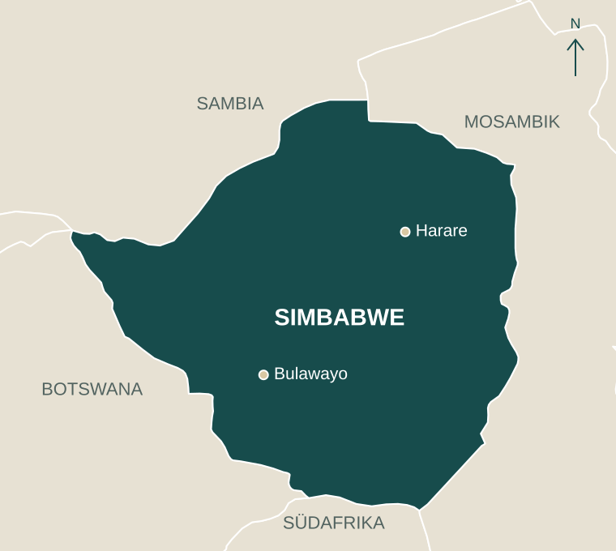

Ernährung ist der Einstieg
Warme Mahlzeiten geben Kindern Kraft und Familien Sicherheit. Das bleibt notwendig.

Projekte in Simbabwe
Eine tägliche Mahlzeit gibt Kindern Kraft. Verlässliches Wasser ermöglicht Hygiene, Schulküchen und Gärten. Gemeinsam mit unseren Partnern begleiten wir Schulen auf dem Weg zu mehr Eigenständigkeit.
Unser Kern
Die Stiftung hilft dort, wo der Alltag konkret blockiert ist. Gleichzeitig soll Hilfe nicht zur Dauerschleife werden. Deshalb denken wir jede Maßnahme vom ersten Tag an in Richtung Verantwortung vor Ort.
Warme Mahlzeiten geben Kindern Kraft und Familien Sicherheit. Das bleibt notwendig.
Ohne Wasser keine Hygiene, keine Küche, kein Garten und kein realistischer Schritt zur Autarkie.
Gärten, Schulbeiträge und lokale Initiativen wachsen nur, wenn Gemeinden sie tragen.
Wasser & Hygiene
In Schulen ohne verlässlichen Wasserzugang kostet jeder Tag Zeit, Kraft und Würde. Wenn Wasser über Kilometer getragen werden muss, bleibt wenig Raum für Küche, Hygiene oder Garten. Ein solarbetriebener Brunnen verändert diese Grundlage sofort.

Wasser wird dann stark, wenn man sieht, was daraus entsteht: Hände waschen, kochen, pflanzen und Verantwortung übernehmen.
Vor Ort gesehen
Die Videos zeigen die gleiche Geschichte aus zwei Blickwinkeln: Vorher musste Wasser mühsam organisiert werden. Nachher wird Wasser zur Infrastruktur, auf der Schule und Gemeinde weiterbauen können.

Schulen als Orte
Hinter jedem Wasserprojekt steht eine Schule mit eigenen Ideen und Menschen, die Verantwortung übernehmen. Unsere Projektkarte in Google Earth zeigt die eingetragenen Schulstandorte in ihrer Umgebung.
Kawara, Nyamweda und Makuvatsine.
Chikowore, St Marks Chipashu, Nyamashesha, Nehanda und Murambwa.
Masiyarwa ist eine von ihnen. Gemeinsam mit Kapnek unterstützen wir die tägliche Schulspeisung.
Die Übersicht lädt ohne Verbindung zu Google. Erst der Link öffnet Google Earth in einem neuen Tab.

Schulspeisung & Bildung
Gemeinsam mit Kapnek unterstützen wir die Ernährung an 152 Schulen. Die Übersicht vom Dezember 2025 erfasst 11.460 Vorschulkinder. Zum Programm gehört auch die Masiyarwa Grundschule in Zvimba.
Die tägliche Mahlzeit gibt Kindern Kraft zum Lernen und Spielen. Frühe Förderung und Gesundheitschecks ergänzen die Schulspeisung. Wasser und Gärten eröffnen den Schulen darüber hinaus Möglichkeiten zur eigenen Versorgung.
Gesundheit & Rehabilitation
Über Partner vor Ort unterstützen wir Kinder mit Behinderungen und Familien, die im Alltag häufig allein gelassen werden. Therapie, Betreuung und Lebensmittelpakete sind keine Randthemen, sondern Teil derselben Haltung: Würde statt Mitleid.


Partner vor Ort
Die Herz HD Stiftung arbeitet seit vielen Jahren mit der J.F. Kapnek Foundation zusammen. Kapnek kennt Schulen, Familien und Strukturen vor Ort und hilft, Projekte so zu begleiten, dass sie nicht an der Realität der Gemeinden vorbeigehen.
Genau deshalb ist Vertrauen ein eigener Projektfaktor: Brunnen, Schulspeisung, Therapie und neue Einkommensideen brauchen Menschen, die Verantwortung lokal tragen.
Gemeinsam weiterlernen
Schulgärten und Geflügelzucht können die Versorgung einer Schule ergänzen. Damit sie dauerhaft funktionieren, müssen Ziele, Verantwortung und die Nutzung möglicher Einnahmen gemeinsam mit der Gemeinde geklärt werden.
Wir begleiten diese Schritte, hören auf die Erfahrungen vor Ort und passen gemeinsam an, was noch nicht funktioniert. Das Ziel bleibt, dass Gemeinden Ernährung, Schulalltag und Infrastruktur zunehmend selbst mittragen können.
Projektübersicht
Wasser, Ernährung und Gesundheit gehören zusammen. Hier finden Sie die Schulen unseres Wasserprogramms nach Jahren und Einblicke in die weiteren Arbeitsfelder.

Chishoshe zeigt, wie Wasser mehr wird als Infrastruktur. Der Schulgarten macht sichtbar, dass aus einem Brunnen Nahrung, Planung und lokale Verantwortung entstehen können.

2025 begleiteten wir Kawara, Nyamweda und Makuvatsine. Wasser schafft die Grundlage für Schulküchen, Hygiene und weitere Ideen der Gemeinden.

Das Wasserprogramm wächst 2026 um fünf weitere Schulen. Jede Schule bringt ihre eigenen Voraussetzungen und Möglichkeiten mit.

Masiyarwa ist eine von 152 Schulen, die mit Nahrung unterstützt werden. Im Programm für frühkindliche Entwicklung verbinden sich Mahlzeiten, Förderung und Gesundheitschecks.

Kinder mit Cerebral Palsy und anderen Einschränkungen erhalten Zugang zu Therapie, Betreuung und Familienunterstützung.

Impilo ist ein Pilotprojekt für digitale Krankenakten. Ziel ist es, medizinische Informationen besser verfügbar zu machen und die Arbeit im Gesundheitswesen zu unterstützen.
Transparenz
Viele Organisationen helfen. Unser Fokus liegt auf direkter Wirkung, persönlicher Kontrolle und Partnerschaft auf Augenhöhe.
Reisen, Büro und Verwaltung werden privat getragen. Spenden gehen in die Projekte.
Projektbesuche sind Teil der Arbeit, nicht Imagepflege. So sehen wir Wirkung und Probleme selbst.
Die Lösungen kommen nicht einfach aus Deutschland. Über Kapnek werden sie mit Menschen vor Ort getragen.
Nächsten Schritt ermöglichen
Jede Spende hilft direkt: bei Schulspeisung, Wassertechnik, Therapie oder dem nächsten Schritt einer Schule in Richtung Eigenständigkeit.